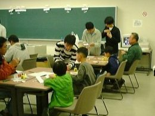

2001年度学園祭 ～ 写真館 ～
公開実験
の
様子
公開実験の様子です。実験は全部で７種類あり、
真空でマシュマロをふくらんだ！
液体窒素で花やゴムボールが凍った！
液体窒素で発泡スチロールのボールが浮いた！
超伝導で磁石が浮いた！
電子レンジで蛍光灯が発光した！
電子レンジでプラズマが発生！
ペットボトルで金魚（しょう油さし)が浮いたり沈んだり…
という内容でした。
展示
の
様子
サークル員の日ごろの研究成果をまとめた展示を行いました。内容は
スピーカー
科学とヒューマニズム
H-Ⅱロケットについて
風船は前に。
スキーの回転はどのようにしてできるか？
気体分子の動き
熱気球の原理
「電子レンジで火の玉発生」
手で望遠鏡！？
台風はなんで季節によってちがう動きをするのだろう？
ホバークラフトはどのようにして動くのか？
マシュマロがふくらんだ！
ペットボトルの中の金魚はなぜしずむ？
どっちの糸が切れるか
電子レンジで蛍光灯が光る
インバータエアコンのなぞを解く
というものでした。
参加型実験
(工作)
の
様子

参加型実験（プロペラ飛行機工作教室)の様子です。今回の工作は比較的難易度が高く、お父さん、お母さんが作られることが多かったように思いますが、サークル員のサポートもあってがんばって子どもさんが完成させたところもありました。
Producted By 物理科学研究会
Nishio
2001/11/26